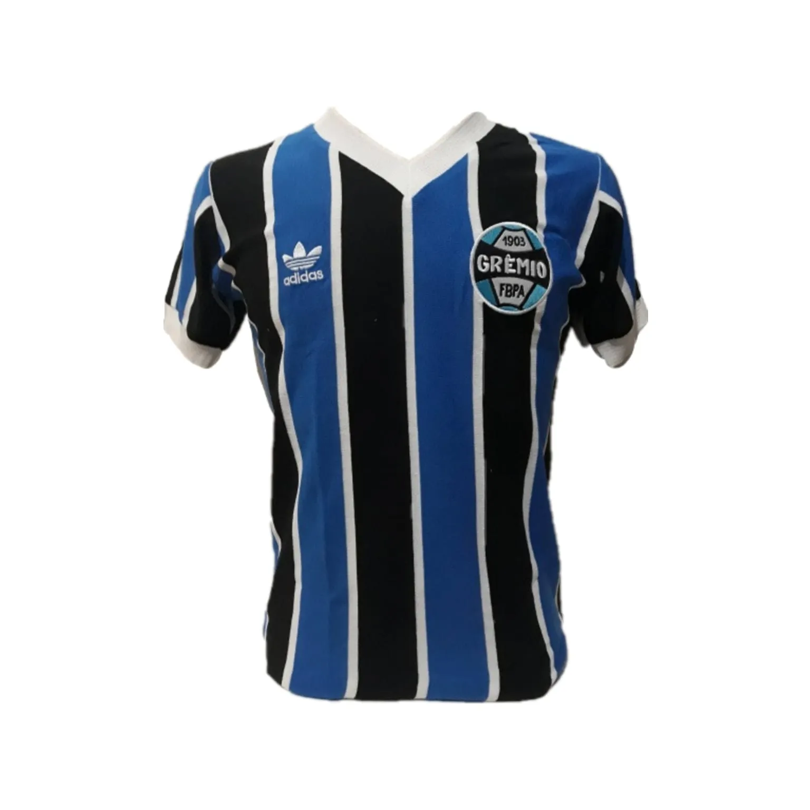
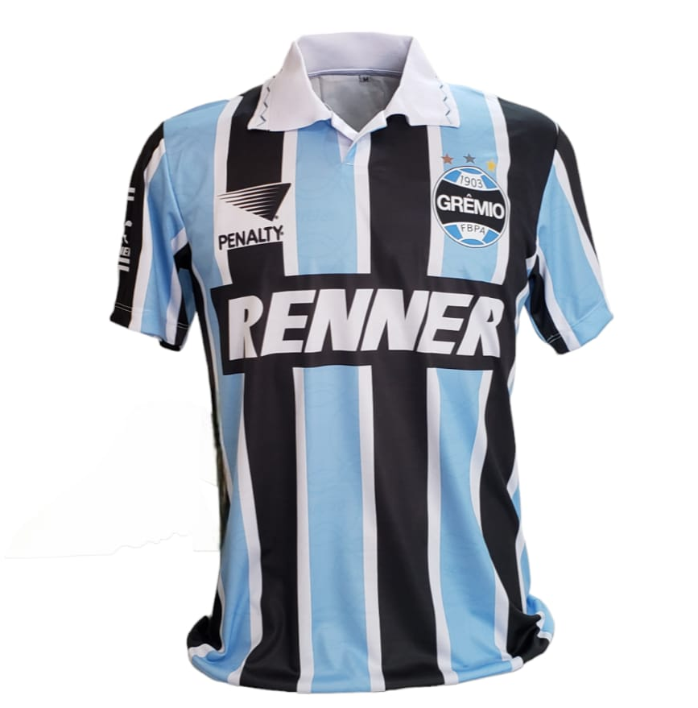
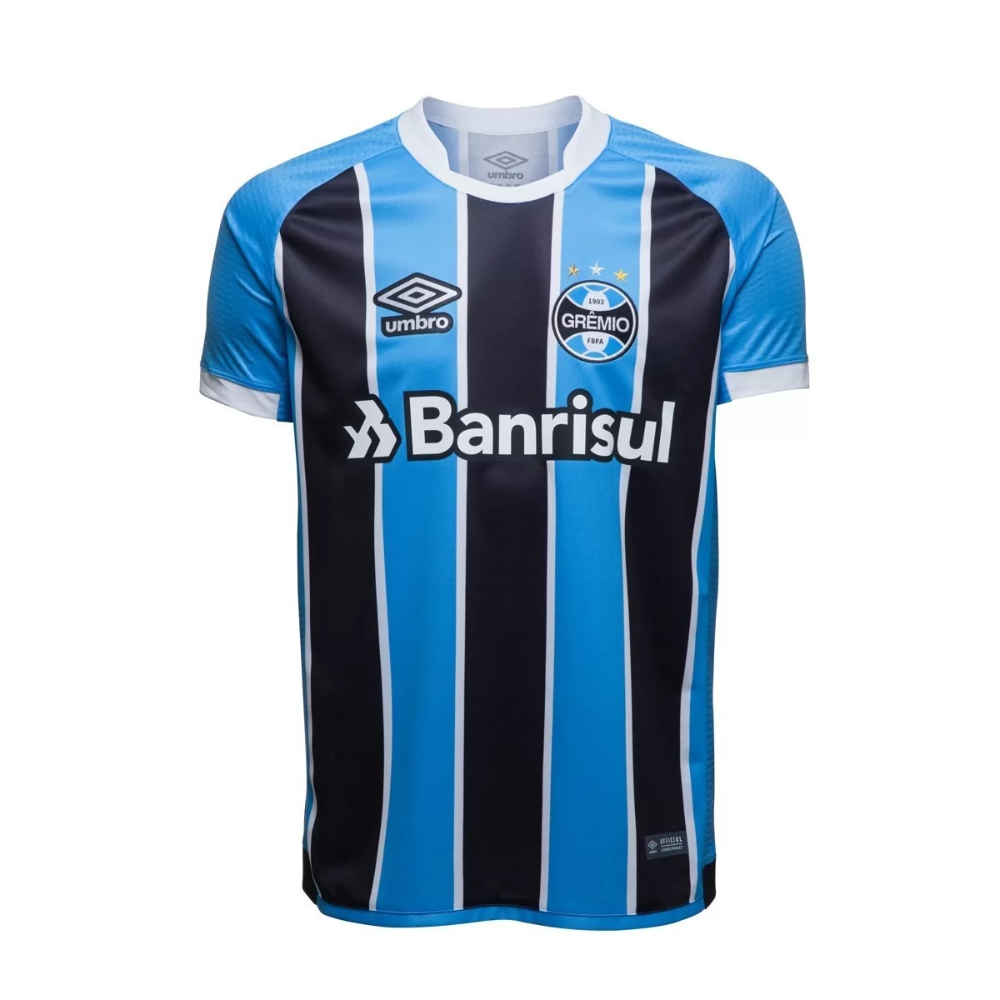

Camisa 1983
A camisa que coloriu a América de azul, branco e preto em junho de 83, seis meses depois, no dia 11 de dezembro, conquistou o mundo.
O adversário do Mundial de Clubes era o Hamburgo, time alemão acostumado às grandes decisões, mas nada que o ídolo Renato não desse conta!
Na partida, a estrela do astro brilhou e o jogador marcou dois gols pelo Tricolor, consagrando o Grêmio como Campeão Mundial Interclubes.
Camisa 1995
O ano de 1995 está marcado na memória dos torcedores do Grêmio.
O clube conquistava o Bicampeonato da Libertadores da América.
Camisa 2017
Além de linda, a camisa ainda possui uma história especial: homenageia a Colômbia,
país com o qual a Chapecoense criou ligação especial após o triste acidente aéreo antes da final da Copa Sul-Americana de 2017.